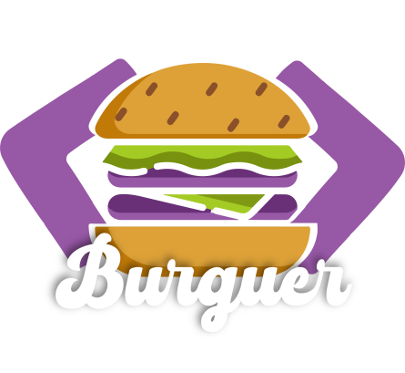
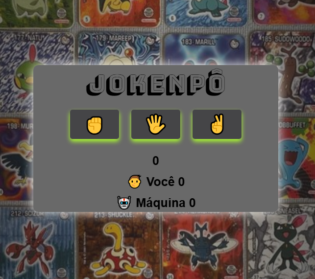
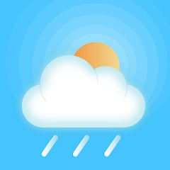
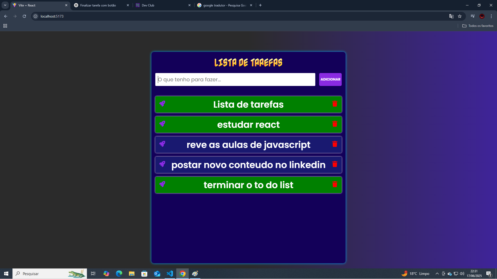

Bruno Correia
Desenvolvedor Front End
Desenvolvedor Front End
Olá! Sou um desenvolvedor front-end em início de carreira, apaixonado por tecnologia e aprendizado constante. Tenho experiência com HTML, CSS, JavaScript, TypeScript, React e Node.js, e estou pronto para contribuir em projetos reais aplicando esses conhecimentos. Sou proativo, gosto de desafios e estou sempre aberto a aprender novas tecnologias, metodologias e boas práticas, buscando crescer profissionalmente na área de desenvolvimento web.

Projeto completo de uma hamburgueria desenvolvido com HTML, CSS, JavaScript, React, Node.js e diversas bibliotecas. A aplicação conta com funcionalidades de login e cadastro de usuários, realização de pedidos e uma área administrativa para gerenciamento do sistema.
repositórioProjeto de e-commerce de produtos digitais e ferramentas, desenvolvido com HTML, CSS e JavaScript. O layout é totalmente responsivo, garantindo uma boa experiência em diferentes dispositivos. A lógica da aplicação foi implementada em JavaScript, utilizando um array para simular o back-end e gerenciar os produtos disponíveis.
Projeto de um site de filmes e series com um designer gráfico muito atraente e de facil navegacão para usuários. Neste projeto foi utilizado HTML, CSS, JavaScript, React e uma API pública para pegar filmes e series.

Aplicação de conversão de moedas desenvolvida com HTML, CSS e JavaScript, utilizando uma API pública para obter as cotações em tempo real. O projeto conta com uma interface simples e responsiva.

Aplicação desenvolvida com HTML, CSS e JavaScript, voltada para auxiliar pessoas na identificação e solução de problemas de encanamento. O projeto foca em simplicidade e usabilidade, oferecendo uma interface intuitiva e funcional.

Projeto do jogo clássico Jokenpô (pedra, papel e tesoura), desenvolvido com HTML, CSS e JavaScript. A lógica implementada permite a interação entre o usuário e a máquina, determinando o vencedor de cada rodada.

Aplicação de previsão do tempo desenvolvida com HTML, CSS e JavaScript. Permite que os usuários consultem as condições climáticas de forma simples e intuitiva, com foco em praticidade e usabilidade.
Desenvolvi esta aplicação para conversão de vídeos do YouTube em áudio MP3, desenvolvida com HTML, CSS e JavaScript no front-end e um back-end com rotas para obter o título do vídeo e realizar o download.

Aplicação de lista de tarefas desenvolvida com HTML, CSS, JavaScript e React. Permite que os usuários organizem e gerenciem suas atividades do dia a dia de forma prática e intuitiva.
Desenvolvi uma aplicação com HTML, CSS e JavaScript para criar times de forma automática. O sistema valida e armazena os nomes dos jogadores em um array, embaralha utilizando Math.random() e distribui entre os times de acordo com a quantidade escolhida pelo usuário.